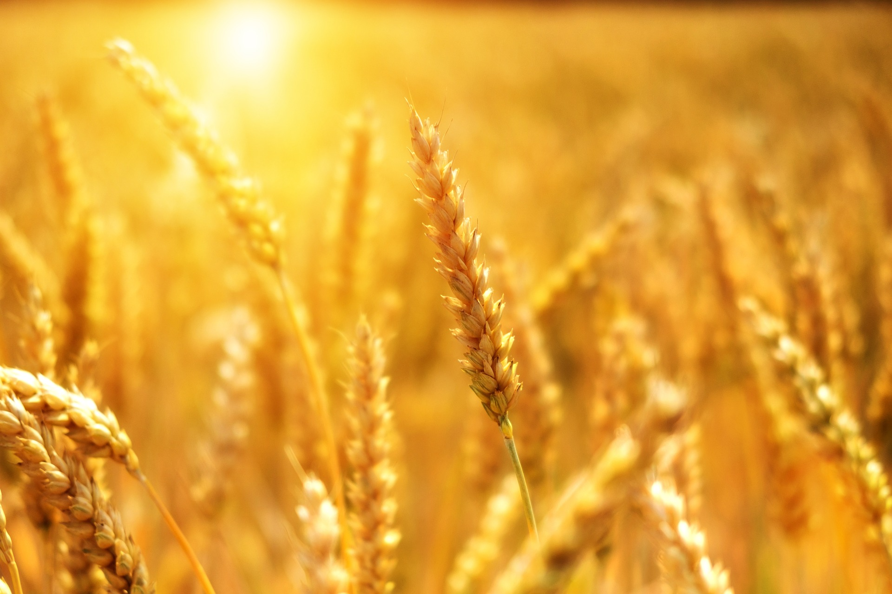

FPO Formation and
Promotion
ISRN has received 35 Farmer Producer Organisations (FPOs) for formation & management from Government agencies NAFED & SFAC in 4 states namely: Jammu & Kashmir, Uttar Pradesh, Uttarakhand, and Himachal Pradesh. ISRN is also contributing in providing support to farmers in Credit & Market linkages, and Technical Trainings


